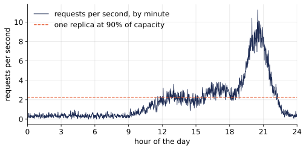

One card in 8 bits meets the objective in the first minutes of the peak
100%
attainment, 8-bit weights and cache, first five minutes of the peak
2.5
good requests per second one replica sustains
0.737
Arabic score with routing at 0.4, floor 0.73
Today: a whole day, a festival's closing night, several cards, and the bill.
Review
Yesterday's trade, read again
A new 3-bit format frees 1.2 GB more than 4-bit and scores 0.845 in English. Nobody has scored it in Arabic yet. What do you tell Yamen?
Ship it: English is above its floor, so Arabic will be too
Ship it: the extra cache is worth any small loss
Never use formats under 8 bits
Score it in Arabic against the floor before any decision
Why. The floors are per language, and Day 3 showed a format can hold English and fail Arabic.
Disaggregation
Prefill on one pool, decode on another, the cache moved between them
Prefill poolcomputes the prompt
Transferthe prompt's cache, over the link
Decode poolsteps never carry a prompt
Each pool can be sized and configured for its phase.
The price: the transfer, and two pools to keep busy.
Lab 4.1 · tasks 1 and 2
One prefill card would be busy 38% of the time; the transfer costs 12 ms
38%
busy share of one prefill card, 2.7 requests a second, half with documents
34
sequences decoding at once, by Little's law
12 ms
cache transfer for the mean prompt; 37 ms for 10,000 tokens
Lab 4.1 · tasks 3 and 4
The prediction matches the supplied runs: shorter stalls when split, but no gain
Two cards
Predicted longest step
Stall p90
TPOT p50
Document TTFT p90
Attainment
Together, chunked at 1,024
0.168 s
0.18 s
63 ms
0.88 s
96.5%
Split, one prefill and one decode
0.074 s
0.13 s
74 ms
1.14 s
93.9%
32 users, 50% documents, 8-bit weights and cache. Supplied runs of the course simulator.
Lab 4.1 · task 5
With a 150 ms stall limit, only the split meets the objective
Together, stall limit 1.0 s96.5%
Split, stall limit 1.0 s93.9%
Together, stall limit 0.15 s13.0%
Split, stall limit 0.15 s92.2%
Condition. Disaggregation pays when the pause limit is shorter than a step that carries a prompt chunk.
Checkpoint
Split the cards?
Another authority's assistant answers short questions with 3,000-token answers, under a 100 ms TPOT limit and a 1 s stall limit. Chunked prefill keeps its stall at 0.2 s. It has two cards. Should it disaggregate?
Yes: disaggregation always lowers TPOT
Not on this evidence: the stall already meets its limit and prompts are short
No: the cache transfer would break the TTFT objective
Yes: long answers need a dedicated prefill card
Why. Split pays when chunked steps break a decode limit; here they do not, and one card of two would serve few, short prefills.
Routing
Round robin sends a conversation's next turn to a replica that has not seen it
Each replica has its own cache: history computed on one is not on another.
A prefix-aware router sends each turn where its prefix is cached.
Affinity piles bursts on one replica unless the router also watches load.
Recap from AE-307, Day 4: inference-aware gateways. Here the question is narrower: what affinity does to one tenant's night and to the tail of the objective.
Lab 4.2 · tasks 1 to 3
Affinity with a load limit serves 99% on the closing night; round robin 94%
Router, 3 replicas
Hit rate
p90 TTFT
Attainment
Round robin
77.3%
1.55 s
93.5%
By conversation, no limit
80.8%
3.77 s
78.7%
By conversation, limit 24
77.9%
0.78 s
99.4%
The evening peak played four times faster: about 8 requests per second. Synthetic: the course simulator.
Lab 4.2 · task 4
Routing by tenant puts half the night on one replica
Replica 1, Qamra Festival49% of requests
Replica 2, Sawt Concerts33%
Replica 0, Athar Heritage Week18%
Attainment 52%: the Qamra replica drowns while the Athar replica idles. Highest hit rate of all routers.
Lab 4.2 · task 5
Route by conversation, fall back to the least-loaded replica
def by_session(engines, r, state, limit=24):
i = zlib.crc32(r.session.encode()) % len(engines)
if load(engines[i]) > limit:
i = min(range(len(engines)), key=lambda j: load(engines[j]))
return engines[i]
A stable hash, so a turn finds its history; a limit, so no replica takes a burst alone.
Checkpoint
Read the replica metrics
On three replicas, one shows 30 requests waiting and the cache 95% full; the other two show nothing waiting and the cache 20% full. The router hashes the tenant. What is the fix?
Add a fourth replica
Raise the sequence cap on the busy replica
Route by conversation with a load limit, so the busy tenant spreads over all replicas
Remove the cache salt so the replicas can share blocks
Why. A hot spot is placement, not capacity: two replicas idle while one drowns.
Lab 4.3 · task 1
The closing day: 160,000 requests, from 0.3 to 11 per second

Four times a usual day, minute by minute. Synthetic demand.
Lab 4.3 · tasks 2 and 3
Scaling on the request rate costs 41% of five cards all day
Policy, at least 1 replica, 4-minute cold start
Replica-hours
SAR
Worst hour
Five replicas all day
120.0
492
100%
Request rate, at 50% of capacity
49.6
203
99.8%
Queue over 20, down after 10 quiet minutes
50.5
207
96.8%
The course's scaling simulator, a fluid model calibrated from the capacity runs.
Lab 4.3 · task 4
An 8-minute cold start breaks the queue signal, not the rate signal
Signal
Cold 2 min
Cold 4 min
Cold 8 min
Request rate, worst hour
100%
99.8%
99.6%
Queue, worst hour
97.9%
96.8%
88.5%
At least one replica. A second minimum replica adds 12.5 replica-hours and changes little.
Stretch · recap from AE-307, Day 3
Scaling to zero saves almost nothing and strands the first visitors of the morning
With a minimum of zero, the closing day costs 0.1 replica-hours less.
The first morning visitors wait a whole cold start: the worst hour falls to 77%.
One replica at night is the price of never making a visitor wait minutes.
Checkpoint
Which signal?
A replica takes 8 minutes to start. Demand rises from 2 to 10 requests a second in half an hour every evening. Which policy keeps the worst hour above 90% at the lowest cost?
Scale up when more than 20 requests are waiting
Run enough replicas for the peak all day
Scale on the rate with a minimum of zero
Scale on the request rate at half of a replica's capacity, never below one replica
Why. The rate rises before the queue does, and the headroom of 50% covers the minutes a new replica needs to start.
The number that decides
Cost per successful request: what was paid, over who was served
Paid
Every replica-hour, starting, serving or idle: card lease plus the node's share.
Served
Only the requests that met the objective: a late answer was paid for and did not serve.
Case prices in SAR (fictional): 3.20 per L4 hour, 0.90 node share, hosted 0.40 and 1.60 per million input and output tokens.
Lab 4.4 · tasks 1 and 2
At Liwan's usual volume, the hosted quote costs 2.5 times less per request
Requests a day
Replica-hours
Node, SAR per 1,000 served
Hosted, SAR per 1,000
10,000
24.0
9.83
1.05
40,000
26.2
2.69
1.05
160,000
49.7
1.27
1.05
A mean request: 2,004 prompt tokens and 157 answer tokens. Scaling on rate, at least one replica, 8-minute cold start.
Lab 4.4 · task 3
Self-hosting breaks even near 360,000 requests a day, nine times today's
Case prices; the course's scaling simulator. With the lease 30% cheaper, the break-even falls to about 140,000 a day.
Lab 4.4 · task 4
Idle cards dominate the energy: 117 Wh per 1,000 requests on a usual day
10,000 a day426 Wh
40,000 a day117 Wh
160,000 a day55 Wh
Per 1,000 successful requests: card at its 72 W maximum, 55 W of host, PUE 1.4. An upper bound.
Lab 4.4 · task 5
The capstone starts from the deployment of Monday morning
You get
The baseline configuration, the trace, the evaluation outcomes, the prices, the simulator and the stand-in endpoint.
You submit
A public repository: raw benchmark files, engine logs, quality by language, a design document and the commit history.
Defence: 12 minutes of talk and 8 of questions, in front of a panel playing Hanadi, Rawya and Kenan.
Checkpoint
Which number goes to the Director?
Kenan's slide says self-hosting costs 2.58 SAR per million output tokens against a hosted 1.60, "so the hosted API is cheaper". Hanadi asks if that is the right comparison. What do you answer?
No: compare cost per successful request over a replayed day, input tokens included
Yes: per-token prices are how providers compare
No: idle hours should be left out of the node's cost
No: compare the node at its peak capacity only
Why. The hosted bill counts 2,004 input tokens a request; the node's bill counts idle hours. Only the cost per served request over a real day includes both.
Four days · what to keep
Predict, measure with spread, change one thing, re-evaluate in both languages, price it
From 0.15 to 2.5
Good requests per second on one L4: scheduling, the prompt, 8-bit weights and cache.
Quality held
Every change scored against the floors per language, with intervals and paired differences.
The honest bill
Cost per successful request over a real day, against the quote, with the break-even.
Next
Capstone: tune Monday's deployment and defend it
Start from labs/capstone/ and your plan from Lab 4.4.
Commit as you go: the history is part of the evidence.
Bring the one decision you want the Director to take.